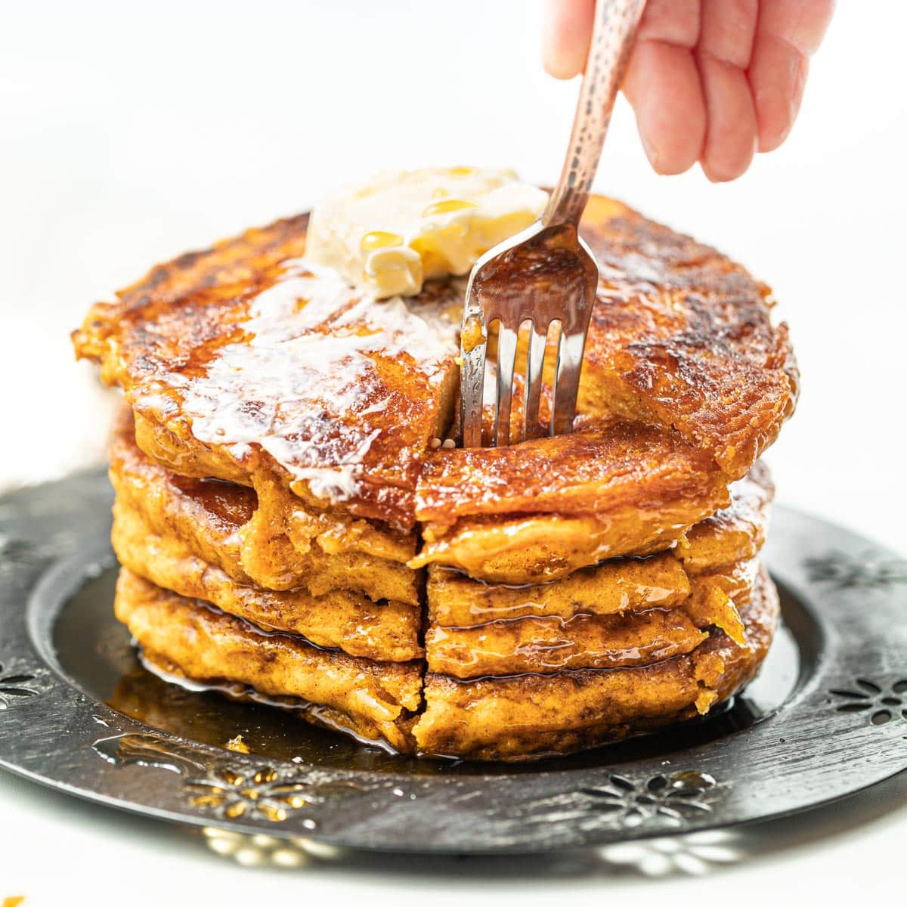

Vegan Pumpkin Pancakes

Description
These vegan pancakes take on a hint of fall with the savory goodness of pumpkin, cinnamon, and pecans! Serve with toppings of choice, including additional pecans and maple syrup.
ingredients
- 2 cups almond milk
- 2 tablespoons distilled white vinegar
- 5 tablespoons water
- 2 tablespoons flaxseed meal
- 2 cups all-purpose flour
- 2 tablespoons coconut sugar
- 1 tablespoon baking powder
- 1 tablespoon ground cinnamon
- 2 teaspoons baking soda
- 1 teaspoon salt
- 1 cup pumpkin puree
- 2 tablespoons coconut oil
- ¼ cup toasted chopped pecans
STEPS
- Combine almond milk and vinegar together in a measuring cup; set aside for 10 minutes.
- Combine water and flaxseed meal together in a bowl; allow to rest until gelatinous, about 5 minutes.
- Combine flour, coconut sugar, baking powder, cinnamon, baking soda, and salt in a medium bowl.
- Add almond milk mixture, flaxseed meal mixture, pumpkin puree, and coconut oil to the bowl with the flour mixture. Mix until well blended. Fold in pecans.
- Heat a lightly oiled griddle over medium-high heat. Drop batter by large spoonfuls onto the griddle and cook until bubbles form and the edges are dry, 3 to 4 minutes. Flip and cook until browned on the other side, 2 to 3 minutes. Repeat with remaining batter.
back to home page